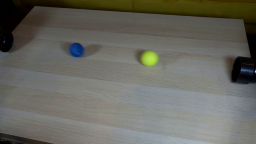

← 探索总览
读图调用确实发生，stdout却没有记录
同一GPT-6.1-Sol工具探针：初始没有图片附件，也没有执行像素分析代码。完整rollout记录了exec内部调用tools.view_image，并在相同call_id的工具输出中实际返回图片；stdout JSONL没有这条视觉事件。
26.8秒 · output tokens 745 · CLI traecli 0.214.1。这是独立基础设施探针，不是原生生成任务或修订干预。
| 记录源 | 证据 |
|---|
| stdout JSONL | 0个view_image事件 |
| 完整rollout | 1张匹配工具调用的实际返回图片 |
因此旧run的“零读图事件”不能解释成没有实际视觉检查。全量分数和RGB修订统计仍成立；输出视觉检查次数需要完整记录才能分析。
完整工具调用与实际返回图片
完整rollout记录2次顶层工具调用，向模型返回1张图片。嵌套工具名来自调用代码；下面图片来自匹配call_id的实际工具输出，区别于模型自述。
exec · view_image · 1张返回图片
call_1sYVSuYyjQUHMBApweggXelz · 调用 2026-11-06T18:58:07.881Z → 返回 2026-11-06T18:58:07.923Z
const result = await tools.view_image({path: "workspace/first_frame.png"});
image(result.image_url);
store("smoke_view_returned_image", typeof result.image_url === "string" && result.image_url.startsWith("data:image/"));
text({tool_name: "view_image", returned_image: typeof result.image_url === "string" && result.image_url.startsWith("data:image/")});

返回图片SHA 03c401ed0dd89360
exec · apply_patch · 0张返回图片
call_zBcZWoA40Kl68GaJAxI549FG · 调用 2026-11-06T18:58:16.752Z → 返回 2026-11-06T18:58:17.506Z
text(await tools.apply_patch("*** Begin Patch\n*** Add File: workspace/tool_smoke.json\n+{\n+ \"image_file\": \"first_frame.png\",\n+ \"tool_name\": \"view_image\",\n+ \"returned_image\": true,\n+ \"observation_method\": \"Visual observation of the image returned by view_image\",\n+ \"balls\": [\n+ {\n+ \"colour\": \"blue\",\n+ \"rough_position\": \"Upper-left area, around 30% of the image width and 35% of the image height\",\n+ \"approximate_center_pixels\": { \"x\": 77, \"y\": 50 }\n+ },\n+ {\n+ \"colour\": \"bright yellow-green\",\n+ \"rough_position\": \"Upper-middle area, slightly right of centre, around 58% of the image width and 41% of the image height\",\n+ \"approximate_center_pixels\": { \"x\": 149, \"y\": 59 }\n+ }\n+ ],\n+ \"position_reference\": \"Approximate visual estimates; origin at the top-left of the displayed 256 by 144 image\"\n+}\n*** End Patch"));
新最小协议将完整rollout保存在workspace外部，提取真实工具调用与返回图片；不恢复旧会话、不启用记忆、不增加固定review提示。旧实验和暂停设置保留。